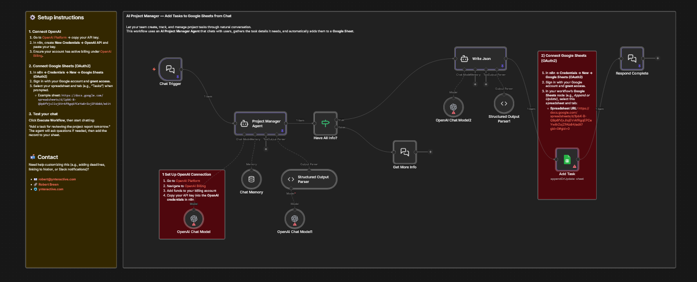

وكيل ذكاء اصطناعي يتحدث معك بلغتك الطبيعية، يسألك عن تفاصيل المهمة، يجمع المعلومات خطوة بخطوة، ثم يُضيفها تلقائياً إلى Google Sheets — بدون فتح أي جدول أو ملء نماذج.

لا نماذج، لا جداول — فقط محادثة طبيعية تتحوّل إلى مهام منظمة.
أريد إنشاء مهمة جديدة: "مراجعة تقرير المشروع"
تمام! 👍 عندي اسم المهمة: "مراجعة تقرير المشروع"
هل تقدر تعطيني وصف للمهمة؟ أو قل "ما أعرف" وأتركها فارغة.
التقرير الربع سنوي — يحتاج مراجعة الأرقام والرسوم البيانية
ممتاز! ✅ آخر شيء — ما حالة المهمة؟
(مثلاً: جديدة، قيد التنفيذ، مكتملة)
جديدة
✅ تم إضافة المهمة بنجاح!
📊 تمت الإضافة تلقائياً إلى Google Sheets
الفريق يقضي وقتاً ثميناً في ملء النماذج بدل العمل الحقيقي. المحادثة أسرع بـ 5 مرات.
إدخال يدوي ممل وبطيء
اكتب رسالة = مهمة مُضافة
5 خطوات ذكية تحدث في ثوانٍ — أنت فقط تكتب، والنظام يتولى الباقي.
اكتب طلبك بلغة طبيعية في واجهة الدردشة المدمجة في N8N. مثلاً: "أنشئ مهمة مراجعة التقرير الشهري"
GPT-4.1 يفهم طلبك ويحدد ما ينقص من معلومات (المهمة، الوصف، الحالة). إذا نقص شيء — يسألك بذكاء. إذا كل شيء متوفر — ينتقل للخطوة التالية.
شرط IF ذكي يتحقق: هل جمع الوكيل كل الحقول؟ إذا نعم → ينتقل لكتابة JSON. إذا لا → يعود للمحادثة ويسأل عن المعلومة الناقصة.
وكيل AI ثانٍ يأخذ المعلومات المجمّعة ويُحوّلها إلى هيكل JSON نظيف يحتوي على: Task, Description, Status — جاهز للإدخال في Google Sheets.
الصف الجديد يظهر فوراً في جدولك مع جميع الحقول مملوءة بشكل صحيح. ثم يتلقى المستخدم رسالة تأكيد "تم إضافة المهمة".
4 تقنيات فقط — لكنها تعمل بتناغم مثالي لتحويل المحادثة إلى بيانات منظمة.
محرك الأتمتة
الوكيل الذكي
قاعدة المهام
ذاكرة المحادثة
محادثة بدل نماذج
AI يسأل عن كل حقل ناقص
يتذكر السياق بين الرسائل
أضف حقول، ربط Notion, Slack...
ملف JSON جاهز للاستيراد في N8N
مجاني 100% — بدون اشتراك
اكتب أي مهمة في واجهة الدردشة — وشاهدها تظهر في Google Sheets خلال ثوانٍ!
يمكن تخصيص هذا النظام ليعمل مع أي أداة إدارة مشاريع. تواصل معي لأساعدك!
أضف bugs, features, PRs بسرعة عبر الشات بدل فتح Sheets.
وثّق المهام فوراً أثناء الاجتماعات بدون مغادرة المحادثة.
جدول Google Sheets كقاعدة بيانات بسيطة مع واجهة محادثة ذكية.
تتبع مهام الطلاب والمشاريع البحثية بسهولة.
نقطة بداية رائعة لبناء أنظمة إدارة مهام مخصصة بالذكاء الاصطناعي.
وثّق طلبات العملاء ومتطلباتهم فوراً أثناء المكالمات.
حمّل المشروع مجاناً وابدأ إضافة المهام عبر الدردشة في 5 دقائق.